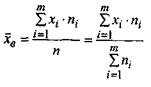
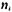
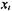
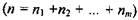
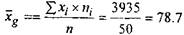

Вибіркова середня (зважена середньоарифметична)
При обчисленні вибіркової середньої із згрупованих даних вважають, що варіанти у кожному класі дорівнюють їх середньому значенню. І тому, беручи до уваги середні значення варіант кожного класу та їх відповідні частоти, можна обчислити вибіркову середню як
 (3)
де - частоти варіант або число спостережень у кожному i-ому класі;
 - середнє значення варіанти в і-ому класі;
- об'єм вибірки
Наприклад, використовуючи Таблицю 4 та формулу (3), можна отримати середню щоденну кількість пасажирів, що користуються послугами даної авіакомпанії.
